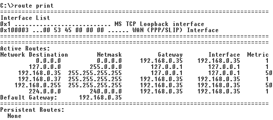
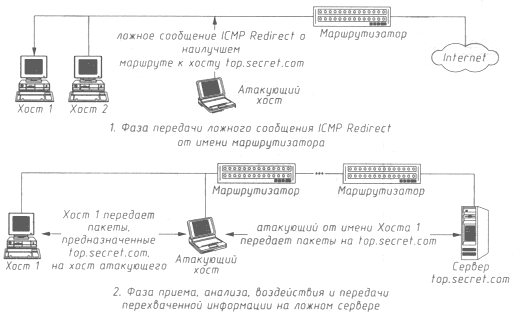
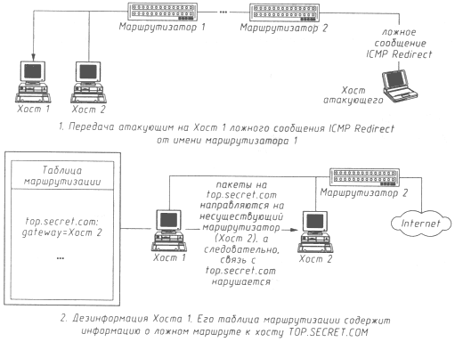

Безопасность >>>
АТАКА НА INTERNETНавязывание хосту ложного маршрута с использованием протокола IСМР
Общеизвестно, что маршрутизация в Сети играет важнейшую роль для обеспечения ее нормального функционирования. Маршрутизация в Internet осуществляется на сетевом уровне (IP-уровень). На программном уровне для ее обеспечения в памяти сетевой операционной системыкаждого хоста существуют специальные таблицы, содержащие данные о возможных маршрутах. На аппаратном уровне каждый сегмент Сети подключен к глобальной сети как минимум через один маршрутизатор, а следовательно, все хосты и маршрутизатор должны физически располагаться в одном сегменте. Поэтому все сообщения, адресованные в другие сегменты Сети, направляются на маршрутизатор, который, в свою очередь, перенаправляет их далее по указанному в пакете IP-адресу, выбирая при этом оптимальный маршрут. Рассмотрим, что представляет собой таблица маршрутизации хоста. Она состоит из пяти колонок: сетевой адрес, сетевая маска, адрес маршрутизатора, интерфейс и метрика (см. рис. 4.9)  Рис. 4.9. Таблица маршрутизации хоста В каждой строке этой таблицы содержится описание соответствующего маршрута, которое включает IP-адрес конечной точки пути (сетевой адрес), IP-адрес соответствующего ближайшего маршрутизатора (адрес маршрутизатора), а также ряд других параметров, характеризующих этот путь. Обычно в системе существует так называемый маршрут по умолчанию (поле "сетевой адрес" содержит значение 0.0.0.0, заданное по умолчанию,а поле "адрес маршрутизатора" - IP-адрес маршрутизатора): все пакеты, посылаемые па IP-адрес вне пределов данной подсети, будут направляться по этому пути, то есть па маршрутизатор. IP-адресация, как адресация на сетевом уровне, была задумана именно для межсегментной передачи данных из одной точки глобальной сети в другую. Для обращения на канальном уровне используются аппаратные адреса сетевых карт. Если бы Сеть представляла собой всего один сегмент, то дополнительной IP-адресации не потребовалось бы, так как аппаратных адресов сетевых адаптеров было бы вполне достаточно для непосредственной пересылки пакетов. Сегодня Internet представляет собой совокупность сегментов, соединенных через маршрутизаторы, и в Сети мы вынуждены использовать систему двойной адресации (по аппаратным и сетевым адресам). Поэтому, когда пакет направляется в другой сегмент Сети, в заголовке сетевого уровня указывается IP-адрес назначения, а в заголовке канального уровня - Ethernet-адрес ближайшего маршрутизатора. Немного о IСМРКак известно, в сети Internet существует управляющий протокол IСМР (Internet Control Message Protocol), одной из функций которого является удаленное управление таблицей маршрутизации на хостах внутри сегмента Сети. Динамическое удаленное управление маршрутизацией изначально задумывалось для предотвращения возможной передачи сообщений по неоптимальному маршруту, а также для повышения отказоустойчивости Сети в целом. Предполагалось, что сетевой сегмент может быть подключен к Internet не через один (как это обычно происходит), а через несколько маршрутизаторов. В этом случае адресоваться во внешнюю сеть можно через любой из ближайших узлов. Это довольно удобно как с точки зрения оптимальности маршрута (например, к хосту www.example.one кратчайший маршрут проходит через первый маршрутизатор, а к хосту www.example.two - через второй маршрутизатор), так и с точки зрения повышения надежности работы Сети: при выходе из строя одного из маршрутизаторов связь с внешним миром возможна через другой маршрутизатор. В обоих случаях - как при изменении оптимального маршрута, так и при выходе из строя маршрутизатора - необходимо изменение таблицы маршрутизации в памяти сетевой операционной системы. Одно из назначений протокола 1СМР состоит именно в динамическом изменении таблицы маршрутизации оконечных сетевых систем. Итак, в Internet удаленное управление маршрутизацией реализовано в виде передачи с маршрутизатора на хост управляющего ICMP-сообщения Redirect Message (Перенаправить сообщение). Заголовок сообщения представлен на рис. 4.10.
Рис. 4.10. Заголовок сообщения ICMP Redirect Message Поля сообщения принимают следующие значения: поле Type - 5, поле Code - 0 = Redirect datagrams for the Network, 1 = Redirect datagrams for the Host, 2 = Redirect datagrams for the Type of Service and Network или 3 = Redirect datagrams for the Type of Service and Host. Как следует из спецификации протокола IСМР, сообщение Redirect бывает двух видов. Первый вид сообщения (code 0) носит название Redirect Datagrams for the Network (Таблица данных перенаправления в сетях) и уведомляет хост о необходимости смены адреса маршрутизатора, заданного по умолчанию, или о смене маршрута к определенной подсети. Второй вид (code 1) - Redirect Datagrams for the Host (Таблица данных перенаправления для хоста) - информирует хост о том, что следует создать новый маршрут к отмеченному в сообщении объекту и внести его в таблицу маршрутизации, указывая IP-адрес хоста, для которого нужна смена маршрута (адрес будет занесен в поле Destination (Назначение) в пристыкованном IP-заголовке), и новый IP-адрес маршрутизатора, куда необходимо направлять пакеты для данного хоста (этот адрес заносится в поле Gateway). В результате исследования реакции различных сетевых систем на данное ICMP-сообщение выяснилось важное ограничение, накладываемое на IP-адрес нового маршрутизатора, - он должен быть в пределах адресов данной подсети. Исследование публикаций, посвященных протоколу IСМР, показало, что сообщение Redirect Datagrams for the Network устарело и уже не используется современными сетевыми ОС. Это подтверждает и проведенный авторами анализ исходных текстов ОС Linux 1.2.8. Иначе дело обстоит с управляющим сообщением Redirect Datagrams for the Host: здесь нет такого единства в рядах разработчиков различных сетевых ОС. Наши исследования показали, что на практике многие из известных UNIX-систем игнорируют это сообщение. Например, если в версии Linux 1.2.8 еще была реакция на Redirect Datagrams for the Host, то уже в версии Linux 2.0.0 такое сообщение игнорировалось. Иначе обстоит дело с ОС фирмы Microsoft - Windows 95 и Windows NT. Опасность Redirect Datagrams for the Host не была принята во внимание, и обе системы реагируют на это сообщение, позволяя удаленно изменять таблицу маршрутизации на любом Windows-хосте. Итак, мы подошли к основному вопросу: в чем же потенциальная опасность реакции сетевой ОС на ICMP-сообщение Redirect Datagrams for the Host? Ответ очевиден: существует возможность несанкционированного изменения маршрутизации на хосте. Что может помешать кракеру самому послать подобное сообщение и навязать системе ложный маршрут? К сожалению, ничего. Анализ механизма идентификации ICMP-сообщения Redirect показывает, что единственным параметром, идентифицирующем это сообщение, является IP-адрес отправителя, который должен совпадать с IP-адресом маршрутизатора, так как это сообщение может и должно передаваться только маршрутизатором. Особенность протокола IСМР состоит в том, что он нс предусматривает никакой дополнительной аутентификации отправителей. То есть ICMP-сообщения передаются на хост маршрутизатором однонаправлепно без создания виртуального соединения (в процессе создания такого соединения можно было бы динамически, например по схеме Диффи-Хелмана, выработать идентифицирующую информацию). А так как ни хост, ни маршрутизатор не имеют заранее определенной статической ключевой информации для идентификации ICMP-сообщения Redirect, то очевидно, что в данном случае у получателя такого сообщения нет возможности установить подлинность его отправителя. Следовательно, ничто не мешает атакующему самому послать ложное ICMP-сообщение Redirect о смене маршрута от имени ближайшего роутера. Приведенные выше факты позволяют осуществить типовую удаленную атаку "внедрение в распределенную ВС ложного объекта путем навязывания ложного маршрута". Для осуществления этой удаленной атаки необходимо подготовить ложное ICMP-сообщение Redirect Datagrams for the Host, где указать конечный IP-адрес маршрута (адрес хоста, маршрут к которому будет изменен) и IP-адрес ложного маршрутизатора. Затем такое сообщение передается на атакуемый хост от имени маршрутизатора, для чего в IP-заголовке в поле адреса отправителя указывается IP-адрес маршрутизатора. Можно предложить два варианта данной удаленной атаки. В первом случае кракер находится в том же сегменте сети, что и объект атаки. Тогда, послав ложное ICMP-сообщение, он в качестве IP-адреса нового маршрутизатора может указать свой IP-адрес или любой из адресов данной подсети. Это даст атакующему возможность перемаршрутизировать сообщения, направляемые атакованным хостом на определенный IP-адрес, и получить контроль над трафиком между этим хостом и интересующим взломщика сервером. Далее атака перейдет во вторую стадию, связанную с приемом, анализом и передачей пакетов, получаемых от "обманутого" хоста. Рассмотрим функциональную схему осуществления этой атаки (рис. 4.11):
 Рис. 4.11. Внутрисегментное навязывание хосту ложного маршрута при использовании протокола ICMP При осуществлении второго варианта удаленной атаки кракер находится в другом сегменте относительно цели атаки. Тогда в случае передачи на атакуемый хост ложного ICMP-сообщения Redirect сам взломщик уже не может получить контроль над трафиком, так как адрес нового маршрутизатора должен находиться в пределах подсети атакуемого хоста. То есть использование данного варианта атаки не позволит атакующему получить доступ к передаваемой по каналу связи информации; в этом случае атака достигает другой цели - нарушения работоспособности хоста (рис. 4.12). Кракер с любого хоста в Internet может послать подобное сообщение на объект атаки, и если сетевая ОС на этом хосте нe проигнорирует данное сообщение, то связь между хостом и указанным в ложном ICMP-сообщении сервером нарушится. Это произойдет потому, что все пакеты, направляемые хостом на этот сервер, будут отправлены на IP-адрес несуществующего маршрутизатора. Для того чтобы выполнить такую межсегментную атаку, атакующему необходимо, во-первых, знать внутренний IP-адрес маршрутизатора, к которому подключен хост, и, во-вторых, выбрать имя сервера, которому требуется изменить маршрутизацию.  Рис. 4.12. Межсегментное навязывание хосту ложного маршрута при использовании протокола ICMP, приводящее к отказу в обслуживании Первая проблема - внутренний IP-адрес маршрутизатора - решается только простым перебором, так как узнать этот адрес из внешней сети не представляется возможным (например, утилита traceroute даст только IP-адрес маршрутизатора во внешней сети). Так как большинство хостов в сети находится в подсетях класса С, то для осуществления этой атаки достаточно будет послать 256 ICMP-сообщений Redirect с различными IP-адресами отправителя. Например, IP-адрес хоста 194.85.96.197. Предположим, что этот хост находится в подсети класса С, тогда IP-адрес маршрутизатора, к которому он подключен, будет иметь те же первые три байта: 194.85.96.*, и взломщику достаточно будет перебрать только последний байт (послать 256 пакетов). Вторая проблема для кракера - выбор имени (или IP-адреса) сервера, к которому будет изменена маршрутизация. Очевидно, что узнать, к какому серверу наиболее часто обращается пользователь данного хоста, для атакующего не представляется возможным. Однако взломщик может, посылая неограниченное число ICMP-сообщений Redirect, последовательно изменять маршрутизацию к наиболее известным или часто используемым серверам Internet (поисковые серверы, серверы известных фирм и т.д.). Дело сильно упростится в том случае, если кракер обладает некоторой информацией об атакуемом объекте (например, он является бывшим сотрудником данной фирмы). Эксперимент показал, что оба варианта рассмотренной удаленной атаки удается осуществить как межсегмеитно, так и внутрисегментно на ОС Linux 1.2.8, ОС Windows 95 и ОС Windows NT 4.0. Остальные сетевые ОС, исследованные нами (Linux версии выше 2.0.0 и CX/LAN/SX, защищен- ная по классу Bl UNIX), игнорировали ICMP-сообщенис Redirect, что кажется вполне логичным с точки зрения обеспечения безопасности. Защититься от этого воздействия можно фильтрацией проходящих ICMP-сообщений Redirect при помощи систем Firewall. Другой способ защиты заключается в изменении исходных текстов сетевого ядра операционных систем с дальнейшей его перекомпиляцией, чтобы запретить реакцию на ICMP-сообщение Redirect. Однако это возможно только в случае свободного распространения исходных текстов ОС (как в случае с ОС Linux или ОС FreeBSD).
|
||||||||||||